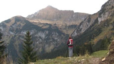

|
CORA PIANTONI
Interne Symmetrien | D/CH 2007 | 5’47’’
Format: DVD
www.piantoni.de
Ausgangspunkt des Films ist der tödliche Unfall des Atomwissenschaftlers Bruno Renner beim Bergsteigen am Mont-Blanc-Massiv. Zur Zeit des Unglücks im Januar 1973 untersuchte Renner am CERN in Genf die internen Symmetrien, ein Fachgebiet der Elementarteilchenphysik. Bis heute sind die genauen Umstände seines Todes nicht geklärt. Renners Familie vermutet, dass er zu viel wusste.
Cora Piantoni, geb. 1975 in München, lebt und arbeitet in München und Zürich. Studium an der Hochschule für Gestaltung und Kunst in Zürich und an der Akademie der bildenden Künste in München.
Filme: Interne Symmetrien 2008 | Seemannsgarn 2007 (UNDERDOX 02) | The worst artwork 2006 | Seestück 2005 (UNDERDOX 01) | Die Reise nach Jerusalem 2003 (UNDERDOX 01) | Traumfänger 2001 | memory 2000 | Kinderspiel 1999 | Die rote Tasche 1998
Ausstellungen (Auswahl): Turning Point, Alpineum Produzentengalerie, Luzern 2008 | Prototypen, Stftung Brandenburger Tor, Berlin 2008 | Knorke Gören, Kwadrat, Berlin 2008 | Position Fotografie, Galerie der Künstler, München 2008 | Kyrgyz National Museum of Fine Arts, Bishkek 2008 | In Gesellschaft von Bäumen, Galerie Royal, München 2007 | Disappearance of Now and Then, Hinterconti, Hamburg (mit Dorota Lukianska) 2007 | BLOCK, Circuit, Lausanne & Les Complices*, Zürich & Substitut, Berlin 2007 | Burggrafschaft, Klenová 2007 | BLOCK, Les Complices*, Zürich 2007 | Disappearance of Now and Then, Hinterconti, Hamburg 2007 | katalog. Galerie Royal, München 2007 | Regionale 7, Kunsthalle, Basel & Kunstverein, Feiburg 2006 | Paris18 Zürich 4, Zeughaus, Zürich 2006 | Backflash, F.A.I.T., Krakau 2005 | Edge Conditions, Capri, Berlin 2005 | Invasionswetterlage, Kunsthof, Zürich 2005
zurück
|